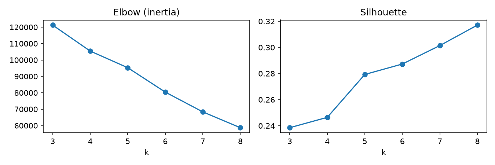
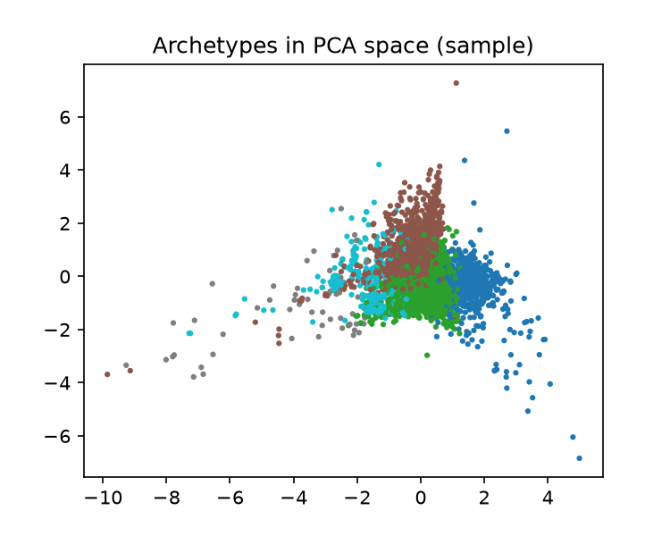
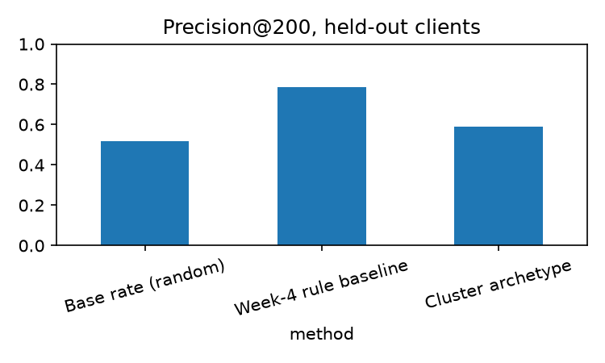

Heera Shanker · FlyRank ML Internship capstone · Lane: Structured Content Archetype Clustering
Content teams cannot review every page, so which pages should they look at first? I grouped 30,000 pages from 32 anonymized clients into behavioral archetypes using K-Means on seven page-level signals. I validated the groups on held-out clients, using observed later decline (never used as a feature) as the yardstick. The riskiest archetype reached a measured precision@200 of 0.59 against a 0.52 base rate, but a hand-written CTR-vs-position rule reached 0.73. The archetypes are therefore directional decision-support for triage, and the simple rule remains the stronger single trigger.
The decision: which pages enter a weekly review queue, and what action (protect, improve, rewrite, merge, prune, monitor) they get. A wrong call wastes editor time or leaves declining pages unattended. Clustering has no ground truth, so this paper checks the groups against an external, later outcome.
Anonymized FlyRank ML Internship starter release: 30,000 pages, 32 clients, one row per page over a 90-day window. The design was informed by the warehouse data contract (daily grain verified with zero duplicate rows on the March 2026 partition; 9.84M rows). Word count (7,699 missing) and scroll rate (125 missing) were median-filled with missing-indicator flags. No client names, domains, URLs or queries are included. Client history depth is unbalanced (28 to 519 days), so archetypes may partly reflect tracking length.


| Method (held-out clients) | precision@200 |
|---|---|
| Base rate (random) | 0.517 |
| Week-4 rule baseline | 0.730 |
| Cluster archetype | 0.590 |

In training, the two riskiest archetypes showed observed decline rates near 63% (about 9,300 and 3,300 pages), versus 44% to 50% for the others. The riskiest large group had moderate traffic, weak CTR, low engagement and low scroll depth: pages seen but not read. The clusters beat chance but not the targeted rule, which makes sense: K-Means groups pages that look alike overall and is not optimized to separate declining from stable pages.
Full playbook with reason codes: archetype_action_playbook.csv. Check the action labels against your cell 3 profile table before you publish.
Notebooks and code: github.com/Imhs14/flyrank-ml-internship-starter-main (folder work/notebooks: w01, w02, w03, w05, w06 and capstone_archetypes). Fixed random_state=42 throughout.
Built on the FlyRank ML Internship dataset. Thanks to the FlyRank AI team for the program and data access.